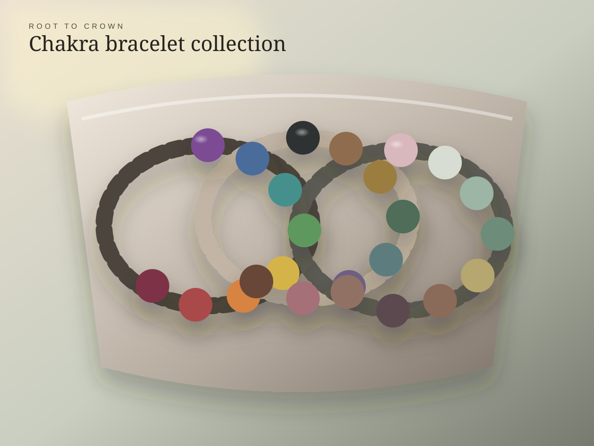

How to choose the right crystal
Notice what immediately stands out to you. Then learn about the stone’s traditional symbolism and decide whether that meaning connects with your current season of life.
HANDMADE & CURATED • SAN ANTONIO
Old Soul Gem brings together handmade crystal jewelry, sculptural objects, thoughtful vintage finds, and spiritual self-care—created to support connection, reflection, and personal expression.

SHOP THE CURRENT COLLECTION
Browse current jewelry, pendants, rings, bracelets, suncatchers, and handmade objects in the Old Soul Gem Etsy shop. Use Linktree for social pages, inspiration, custom-order contact, and updates.
THE OLD SOUL APPROACH
Created by hand. Chosen with intention. Given new life.
Old Soul Gem was born from a deep love for energy, art, and intention. Crystals are appreciated not only for their beauty, but as gentle reminders that can help us connect with ourselves, our spaces, and the world around us. Handmade work sits beside thoughtfully curated vintage finds, honoring creativity, reuse, and the individual story carried by every object.
FEATURED FROM ETSY
Explore a selection of current Etsy listings below. Product availability, variations, shipping, policies, and final pricing are confirmed on Etsy at checkout.
CRYSTAL GUIDE
Choosing a crystal does not have to be complicated. You can begin with a color, shape, texture, personal intention, or simply the stone that catches your attention first. Old Soul Gem’s guidance is designed to be approachable, personal, and free of pressure.
Notice what immediately stands out to you. Then learn about the stone’s traditional symbolism and decide whether that meaning connects with your current season of life.
Some people choose stones around rest, confidence, creativity, grounding, new beginnings, or emotional reflection. The intention is personal; the crystal can become a physical reminder of it.
Wear the stone, keep it somewhere meaningful, use it during meditation or journaling, or simply enjoy it as a beautiful object. There is no single correct ritual.
Store jewelry separately, keep it dry, and avoid harsh cleaners. Because natural stones vary in hardness and sensitivity, gentle care is always the safest approach.
Crystal traditions are spiritual and cultural practices, not medical treatment. Old Soul Gem does not diagnose conditions or promise health outcomes.
INTUITIVE REIKI
Alejandra is a trained Usui Reiki Master whose goal is to support others as they move through their own journey of self-improvement, inner peace, and self-connection.
Sessions may be offered in person or at a distance, depending on availability. Each experience is approached gently and without judgment, with room for rest, intention-setting, and personal reflection.
Reiki is a complementary spiritual wellness practice and is not a replacement for medical or mental-health care.
Ask About a Reiki SessionMEET THE MAKER
Old Soul Gem is Alejandra Bocardo’s space for creating beauty with meaning.
As an Usui Reiki Master and lifelong student of crystals, energy, art, and intuitive practice, Alejandra created Old Soul Gem to meet people wherever they are. That may mean choosing a crystal to work with, wearing a piece infused with intention, placing an object in a meaningful space, or simply learning more about energy and self-connection.
Old Soul Gem is not limited to jewelry. Sculptural pieces, handmade objects, and carefully selected vintage finds reflect a belief that art carries energy—and that recycling and renewing meaningful objects can honor both Mother Earth and the story of the materials themselves.
At the heart of it all is a simple intention: to help people find a place of peace within themselves, gently, intuitively, and in their own time.
HANDMADE JEWELRY • CRYSTALS • ART • VINTAGE FINDS • REIKI • SAN ANTONIO, TEXAS
CONNECT
Use Etsy for current products and secure checkout. Send a message here for a custom jewelry request, crystal-guidance question, market inquiry, or intuitive Reiki session.
Messages are delivered directly to Alejandra at Old Soul Gem.